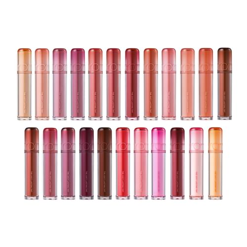
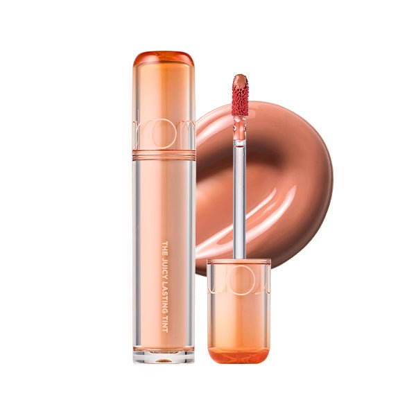
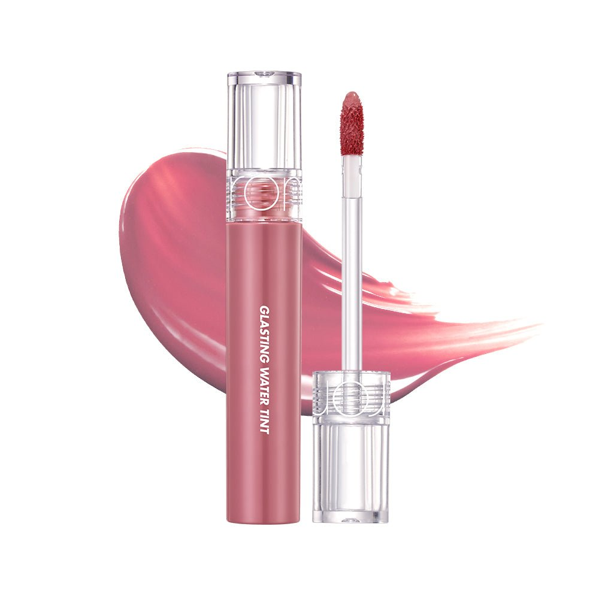
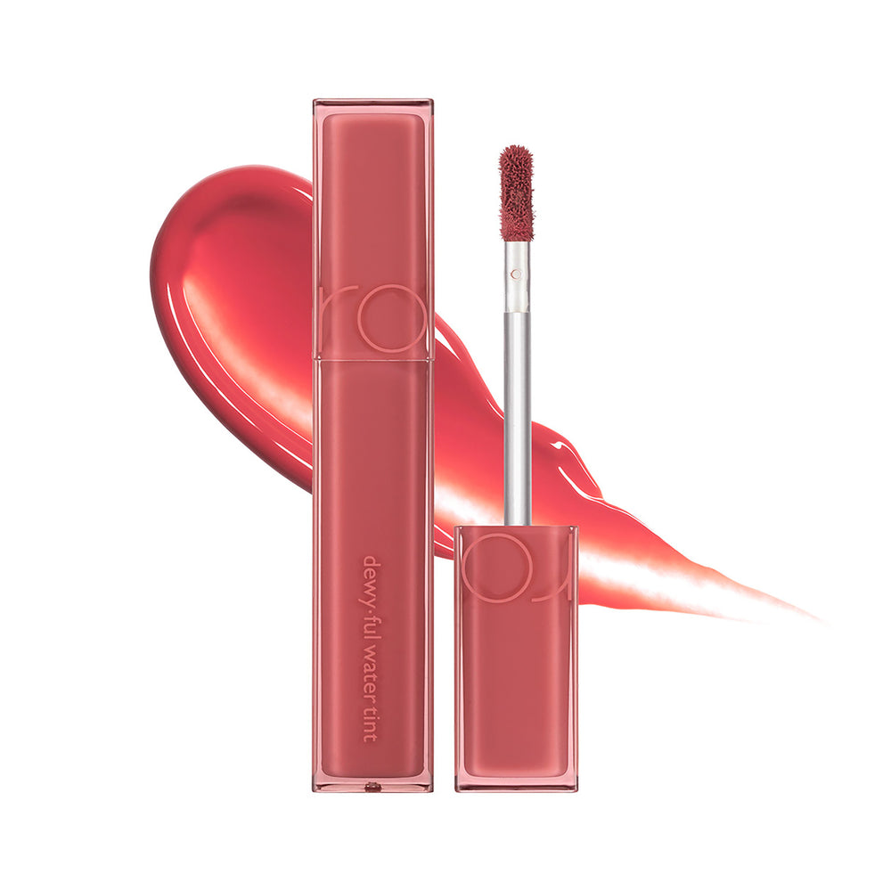

Home / The K-Beauty Edit / rom&nd lip tints
The makeup edit Shopping guide
rom&nd Lip Tints on YesStyle: Juicy, Glasting or Dewyful?
Three glossy tints, a lot of tempting shades. Here is how to find the finish and color that feel most like you.
A lot of shine.THREE ROM&ND LINES, DECODED

The Juicy Lasting Tint lineup. Colors shown are illustrative; shades and packaging can change.
How we chose: We compared brand and retailer product descriptions, not results from a head-to-head wear test. We have not personally tested these tints. Finish, color and wear can look different on your lips.
Shopping note: Product buttons go directly to YesStyle without affiliate tracking. Prices, shades and availability can change by destination.
If you have ever opened a rom&nd product page and found yourself choosing between several very similar-looking tints, you are not alone. The names are close, the packaging is pretty, and every option promises some version of a glossy lip.
Instead of picking a winner for everyone, start with the kind of shine you like, then narrow down the color family. Below, we use the descriptions for the exact YesStyle listings linked here. Think of them as shopping clues rather than a guarantee of how a formula will wear on you.
01 — The quick edit
rom&nd lip tints at a glance
| Tint | Described finish | A good starting point if… |
|---|---|---|
| The Juicy Lasting TintThe updated line | Fruit-inspired colors with a high-shine, double-glazed look. | You want color and a noticeably glossy finish. |
| Glasting Water TintGlassy color | YesStyle describes rich color with a glassy, dewy finish. | You like the idea of a glassy lip in a tinted formula. |
| Dewyful Water TintWatery glow | rom&nd describes a clear, glossy look and watery texture. | You prefer a fresh, dewy-looking lip. |
These are descriptions from product pages, not rankings from our own testing. Actual shine, color and comfort vary with shade, application and your lips.

Shade availability may vary.
The fruit-inspired one
The Juicy Lasting Tint
Love a glossy lip with a little more presence? The updated The Juicy Lasting Tint is the place to begin. rom&nd describes a high-shine, double-glazed finish, while YesStyle highlights a range of fruit-inspired shades.1
For a warmer direction, YesStyle describes #11 Papaya Jam as a nude coral orange; for a deeper color, it describes #22 Dotori Bomb as deep cherry. Those descriptions are a starting point, not a prediction of how either shade will look on your lips. Check the selected shade on the product page before ordering.
Version check: This is The Juicy Lasting Tint, the updated line, not the original Juicy Lasting Tint. Similar shade names can have different numbers between the lines. Match both the full product name and shade before buying.
View The Juicy on YesStyle
Shade availability may vary.
The glassy-finish one
Glasting Water Tint
Glasting Water Tint is for the days when shine is part of the look, not an afterthought. YesStyle describes the line as offering rich color with a glassy, dewy finish. Look at the individual shades on the listing to find the depth and tone you like.2
What to consider: A glassy surface can transfer to cups or soften as you eat and drink. Some color may remain after the shine fades, but how much varies; we cannot promise a particular stain or wear time.
Ingredient note: The retailer's ingredient information lists fragrance and notes that ingredients may vary by shade. If you are sensitive to fragrance, check the exact selected variant and packaging.
View Glasting on YesStyle
Shade availability may vary.
The dewy-look one
Dewyful Water Tint
If you want your lip color to look fresh and luminous, Dewyful is worth a look. rom&nd describes it as a clear, glossy tint with a watery texture; YesStyle describes a dewy finish.3
What to consider: A watery description does not guarantee that a particular shade will look sheer, feel the same on every person or leave less stain than the others. If you want a subtle result, start with a small amount and build gradually.
Shade check: Browse the current YesStyle options rather than relying on another region's shade chart. Available colors can differ and may sell out.
View Dewyful on YesStyle02 — Find your color
How to choose a rom&nd lip tint shade online
Decide on the effect first
For an everyday look, begin with a rose, peach or brown close to your natural lip color. If you want more contrast, explore a deeper berry, cherry or brick. These are visual directions, not rules about who can wear which shade; the same color can look subtle on one person and bright on another.
Look at swatches on lips like yours
Natural lip pigmentation changes how a tint appears. Compare photos or videos on people with similar lip depth, preferably in daylight and without heavy filters. An arm swatch is useful for seeing a color family, but it is not a perfect preview of the final lip color. Screens and lighting can change the impression too.
Check the exact line and shade
Save both the product name and shade name or number when comparing swatches. For example, the older Juicy Lasting Tint and the updated The Juicy Lasting Tint are separate listings; do not assume a number from an older review refers to the same color in the newer range. Confirm your selection, stock and shipping destination on YesStyle.
03 — Make it yours
How to apply a glossy lip tint
- Prep gently. Apply a little lip balm if your lips feel dry. Let it settle, then blot excess before tint; a thick layer underneath can change how the color applies.
- Start in the center. Dab on a small amount and blend outwards for a softer edge. For more definition, follow your natural lip line with the applicator.
- Build to your preference. Add another thin layer if you want more visible color. Give the finish a moment to settle before judging it.
- Bring it with you. Gloss can fade or transfer with eating and drinking. Reapply when you want to refresh the shine, and remove gently at the end of the day.
Comfort is individual. Check the ingredient list for your chosen shade if you have known sensitivities, and stop using a product if it irritates your lips.
04 — Your questions
Frequently asked questions
Which rom&nd lip tint is best for a natural look?
A natural look depends on shade and application as much as the formula. Dewyful is described as a clear, dewy tint, but you can also apply a small amount of The Juicy or Glasting in a color close to your lips. Compare lip swatches and build slowly.
Are rom&nd lip tints transfer-proof?
Do not assume a glossy tint is transfer-proof. The shiny layer can leave marks on a cup or mask, and a remaining stain can vary by shade, application and wear. Blotting may reduce surface shine and transfer, but it will not guarantee a transfer-free result.
Is The Juicy Lasting Tint the same as Juicy Lasting Tint?
No. The Juicy Lasting Tint is the updated line covered here; the original Juicy Lasting Tint is a separate product. Check the full name and shade number, especially when using older shade reviews as a reference.
Do all shades leave the same stain?
Not necessarily. Color depth, your natural lip color and how much you apply can affect the result. A stain left after the gloss fades may not look identical to the freshly applied product.
The takeaway
Choose the look, then choose the shade
Think fruit-inspired high shine for The Juicy, a glassy color look for Glasting, and a clear, watery-looking glow for Dewyful. Then check real-lip swatches and the exact listing before deciding.
Explore more Korean lip tintsRead next: Korean sunscreens on YesStyle
Sources and further reading
- rom&nd: The Juicy Lasting Tint; YesStyle: The Juicy Lasting Tint.
- YesStyle: Glasting Water Tint.
- rom&nd: Dewyful Water Tint; YesStyle: Dewyful Water Tint.
Product information checked November 29, 2026. Formulas, shades, packaging, prices and availability can change.